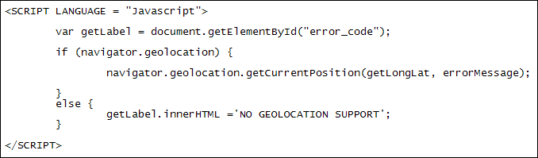

Geolocation
One really useful new browser object you can use is Geolocation. Geolocation returns a Latitude and Longitude that you can use on mapping services like Google Maps. We'll do that now. (You'll need a modern browser for this, though. If you're using Internet Explorer then make sure it's at least version 9.)
Create a new web page for this from your template. Move the two SCRIPT tags to the BODY section. Add the following two HTML tags just above the SCRIPT tags:
<P ID="error_code"></P>
<DIV ID="map"></DIV>
Your code should then look like this:
If Geolocation is not supported in the browser we'll display an error message. If all goes well we can display a Google map showing the user's location.
For the first line of the Javascript add the code below:
var getLabel = document.getElementById("error_code");
This just gets a reference to the error_code ID. We'll use this to display an error if anything goes wrong.
Geolocation is part of the Navigator objector. To test browser support, add the following IF … ELSE statement:
if ( navigator.geolocation ) {
getLabel.innerHTML ="GEOLOCATION SUPPORTED";
}
else {
getLabel.innerHTML ="GEOLOCATION NOT SUPPORTED";
}
In between the round brackets of IF we're just testing for a value of true for navigator.geolocation.
Save your work and load the page into a browser. IF the browser supports the Geolocation object then you'll see the first message displayed, and you can continue with this lesson. If you see the second message displayed then you'll need to either update your current browser or download a new one.
The Geolocation Object
The Geolocation Object has three methods you can use (case sensitive):
getCurrentPosition
watchPosition
clearWatch
We'll use the first one, getCurrentPosition. The second one, watchPosition, is like a timer. It's used if you want to update a user's position. You use clearWatch to clear the watchPosition timer.
getCurrentPosition is used like this:
getCurrentPosition( location, error, options )
Only the first argument between the round brackets is required. The error argument is for when something goes wrong. If a user's positions can't be found then you can display an error message. We'll do this shortly. The third argument, options, is if you want to set the accuracy, a timeout value, or if a cached location should be used. We won't use any of the options.
The location argument is usually a function. getCurrentPosition then provides some position values for you to manipulate.
So, delete the getLabel code for the IF statement, but leave the one for the ELSE part. Type the following for IF:
navigator.geolocation.getCurrentPosition( getLongLat, errorMessage );
Your code should then look like this:

Now add the getLongLat function we set up for the first argument of getCurrentPosition:
function getLongLat( position ) {
getLabel.innerHTML = position.coords.latitude + "<BR>";
getLabel.innerHTML = getLabel.innerHTML + position.coords.longitude + "<BR>";
}
Now add the error function:
function errorMessage( error ) {
}
We'll add some code for the error function shortly. But here's what your code should look like:
Have a look at the getLongLat function, though:
function getLongLat( position ) {
When we set up the getCurrentPosition method we didn't add a position argument:
getCurrentPosition( getLongLat, errorMessage )
So how come our getLongLat function now has this position argument? Well, it's because the getCurrentPosition method provides this for you. When getCurrentPosition method goes off and does its stuff, it returns with a few properties for you. You can store these properties in a variable between the round brackets of your function. We've called our variable position. You could call it something else if you like, though.
Now have a look at the first line of the getLongLat function:
getLabel.innerHTML = position.coords.latitude + "<BR>";
After the equal sign is our position variable. Then we have this:
coords.latitude
cords is one of the properties returned by the getCurrentPosition method (the other one is timestamp). After a dot, you can type one of quite a few other sub-properties. We used latitude. But here are the other options:
longitude
accuracy
altitude
altitudeAccuracy
heading
speed
For the second line of our function, we've used the longitude sub-property (careful with longitude - it's easy to misspell!):
position.coords.longitude
Save your work and try it out. When you refresh your browser, you should see a popup message appear. When you're trying to get somebody's position they will have the option of saying no. The box will look something like this: (You'll get different warnings depending on the browser you're using. This one is from Google Chrome.)
Allow the tracking, though, and a latitude and longitude will appear:
Before we get to how to use these with Google Maps, let's add the error message code.
Geolocation Error Codes
The error part of the getCurrentPosition method has a few inbuilt error codes you can use. They are:
TIMEOUT
POSITION_UNAVAILABLE
PERMISSION_DENIED
UNKNOWN_ERROR
You can use the error codes in a switch statement. Add the following to your errorMessage( error ) function:
switch( error.code ) {
case error.TIMEOUT:
getLabel.innerHTML = 'Timeout';
break;
case error.POSITION_UNAVAILABLE:
getLabel.innerHTML = 'Position unavailable';
break;
case error.PERMISSION_DENIED:
getLabel.innerHTML ='Permission denied';
break;
case error.UNKNOWN_ERROR:
getLabel.innerHTML ='Unknown error';
break;
}
Notice what's in the round brackets of switch:
error.code
The error part is the property and code part is the value it will contain. This value equates to one of the inbuilt error codes from above (the error code are called constants, and they are in capital letters.) Again, the getCurrentPosition method fetches these values for you.
To test it out, refresh the page in your browser. Instead of allowing tracking, this time deny it. You should see the "Permission Denied" error appear. (Some browsers will now prevent the popup box appearing again, once you click deny. To get it back, you'll have to close the browser down and reopen it.)
In the next part, you'll see how to link all this information up with a Google map.